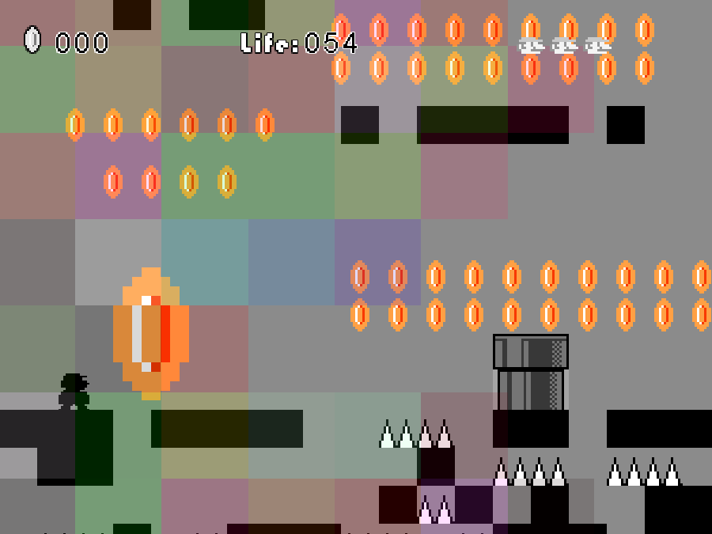
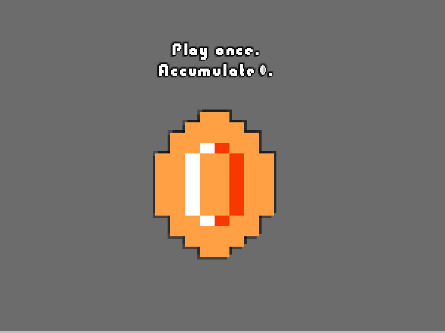
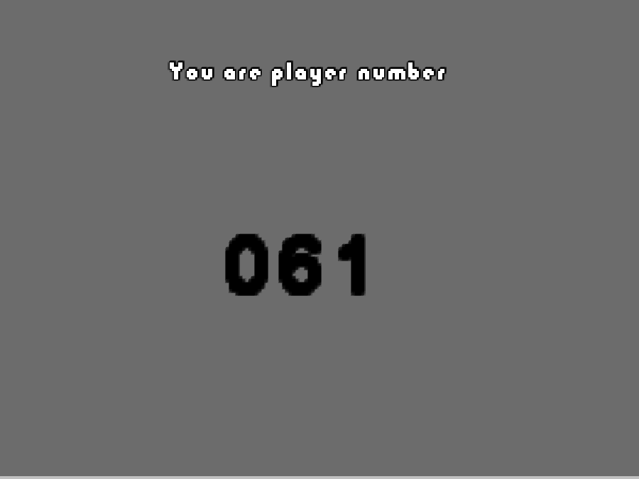
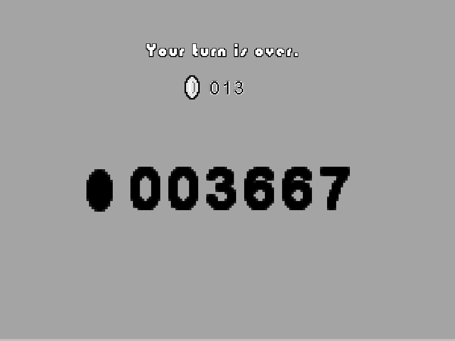
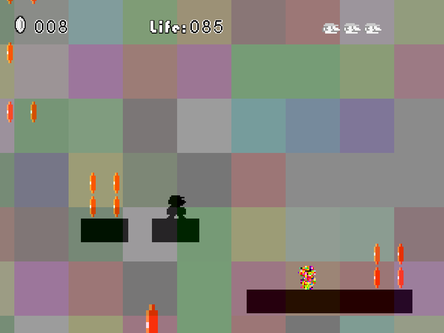
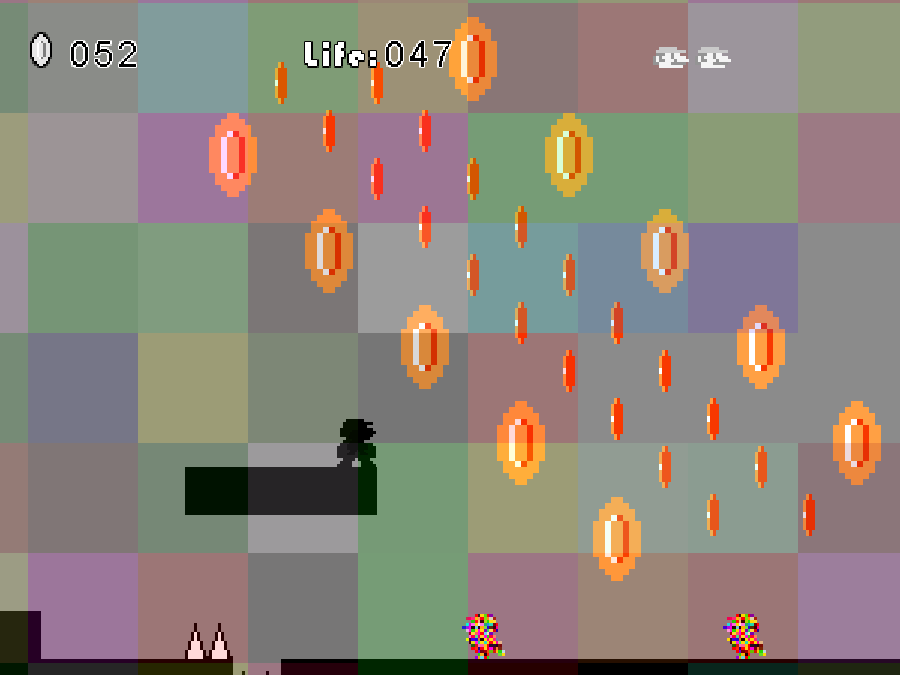
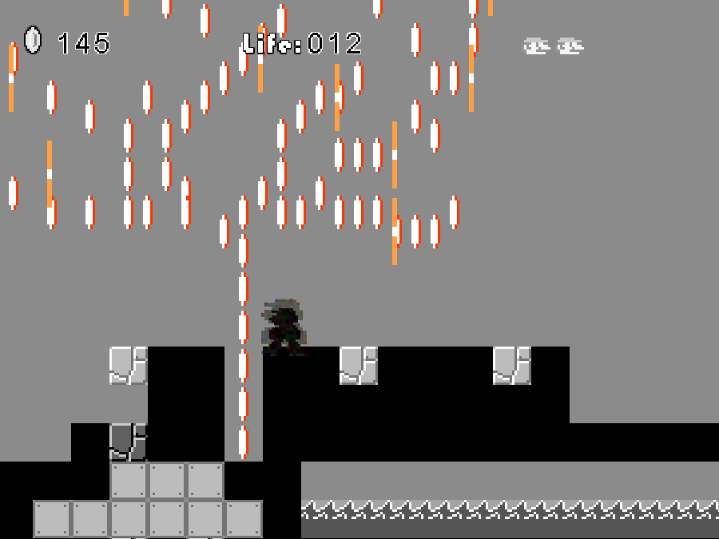
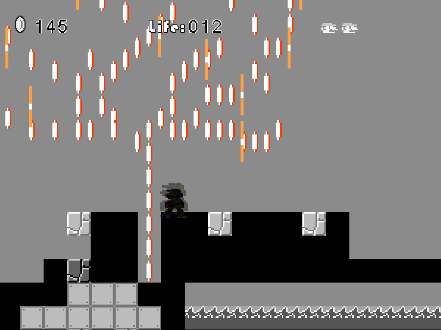

Coins
2012-05-04 19:39:10
status: inherit
author: Bryan

COINS! is a conceptual artwork by B-Ma and Anita Hawkins, created for the Australian Social Innovation Exchange's Changemakers Festival 2012. It is a simple appropriation of Super Mario Bros. that comments on our instincts for consumption, the role of digital games, and the nature of interaction with natural systems.
The original statement of the work:
"We attempt throughout our lives to reconcile our instincts for consumption and responsibility, and we often act without understanding the nature of their repercussions on the systems we interact with.
Digital games are often built to purposefully and transparently satisfy these same base urges."
Players are invited to play once and gather as many coins as possible before dying from a time limit, falling in a pit, or running into hazards or enemies. A single player may not discern any meaning from the experience aside from it being a familiar platform game context made slightly strange. Viewing the lifetime of the game through multiple interactions starts to reveal the systems underneath - the avatar begins to distort and reflect the actions and existences of previous playthroughs, and as the global coin count goes up, the game world begins to literally fall apart, which eventually renders the game essentially unplayable.



 

Comments: